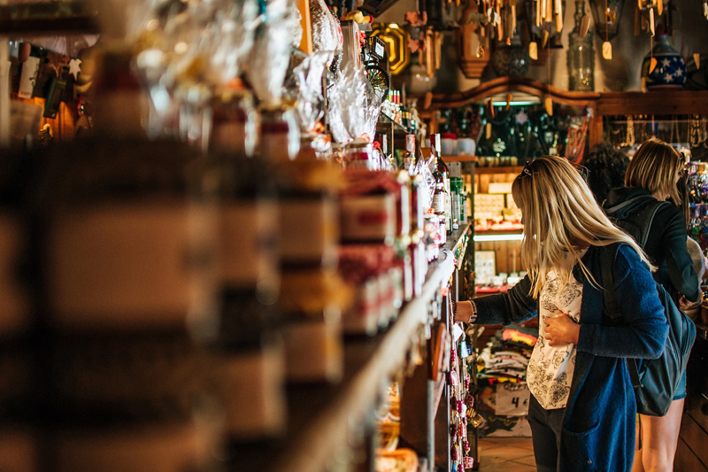

Traveling anywhere is incomplete if you don’t have enough memorabilia with you. Most of the places that you visit produce some special kinds of memorabilia that you can collect to remember the trip by.
Being the hub of the handicrafts, North East India is a place from where you can do hundreds of small things that will help you to keep reminiscing the trip for the rest of your life. You just need a list that helps you to find out the perfect little items that you can buy for your friends and family and you as well.
Want to have such a list? Have a look at the following section of this article.
Assam Silk Cloths
The silk produced in Assam is starkly different from silks that are produced in different places across the world. The high-quality silk is used to make mekhela chador and sarees for different occasions. Even if you are not comfortable wearing these dresses, you can visit the markets to find a shawl, blouses, shirts or wrap-around skirts for you and your family members.
Naga Shawl
These traditional shawls are primarily available in red and black. The local tribe people use these shawls to express respect to their tribesmen or people from other tribes. Each of the tribe of Nagaland has different traditional design motifs that they create on the shawl to make one shawl different from the others.
Naga Jewellery
Just like different tribes across the world, the tribal people of Nagaland have different jewellery of their own. Most of the tribes of Nagaland make jewellery from small beads and use them in their daily lives. Some of these jewellery comes with horns, nails and other embellishments as well. If you attend the Hornbill festival, you will see hundreds of tribesmen and women wearing pieces of jewellery that are made with big beads and rhinestones. Collect these pieces of jewellery to create an entirely different look.
Wooden Animal Sculpture
Creating wooden sculpture is one of the most common passions for people of most of the tribes of Nagaland. Wood carving is an art that you can see almost everywhere in Nagaland. Most of the tribes create a wooden sculpture of wild animals and birds. You can buy these small sculptures to give to your loved ones as a souvenir. Even if you do not go to the villages of Nagaland, you can buy these sculptures right in the local markets of Kohima.
There are several different satras in the Majuli island each of which has a different way to express their love for god. Samaguri satra is one such satra where the monks make different masks based on the characters of Ramayana and Mahabharata using clay, cloth and bamboo. You can get one of these masks as wall decor for your home.
Garments of Arunachal Pradesh
Women travelers who love authentic costumes of different regions, the brightly colored Arunachal garments are surely something they would cherish. The outfits vary depending on the marital status of the women. Different tribes have different variations of the dresses for both men and women. All of which are extremely pretty and eye-catching.
So, these are some of the best-handcrafted souvenirs that you can collect for yourself or your loved ones. Even though the markets of the cities also keep these souvenirs, they generally ask for a sky-high price for that. So, if you are buying these souvenirs from the city markets, make sure to bargain your best to reach a good price.